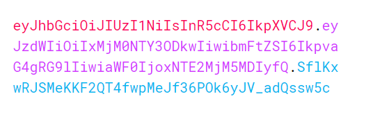
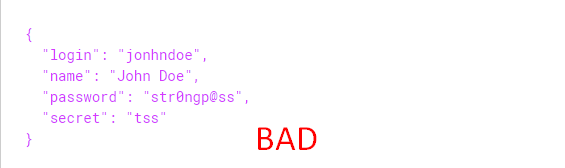
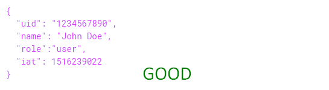

JSON Web Token
Hello! Today i am gonna tell you about JSON web token.
What is it?
JSON Web Token (JWT) is an open standard (RFC 7519) that defines a
compact and self-contained way for securely transmitting information
between parties as a JSON object. This information can be verified
and trusted because it is digitally signed.
Lets start with understanding what jwt is.
What is it used for?
Authorization
Information Exchange
The most common scenario for using JWT is Authorization. And also JSON
Web Tokens are a good way of securely transmitting information
between parties.
Structure
The JWT consist of 3 parts. They are header, payload, signature.
Header and payload are a common JSON objects which are encoded using base64url algorithm.
Encoded parts concatenate to each other and based on them, a signature is calculated, which also becomes part
of the token
what does jwt looks like?

This is how JWT looks like. Different colored text indicates parts of token.
Red text represents header, pink part is payload and blue text is signature.
When we just look at this picture, we dont realize whats going on. Now lets figure out what all these parts
are for.
header
Encrypted:
eyJhbGciOiJIUzI1NiIsInR5cCI6IkpXVCJ9
Decrypted:
{
"alg": "HS256",
"typ": "JWT"
}
The header typically consists of two parts: the signing algorithm being
used and the type of the token (for compatibility), which is always JWT
Payload
Encrypted:
eyJzdWIiOiIxMjM0NTY3ODkwIiwibmFtZSI6IkpvaG4gRG9lIiwiaWF0IjoxNTE2MjM5MDIyfQ
Decrypted:
{
"sub": "1234567890",
"name": "John Doe",
"iat": 1516239022
}
The payload contains any information that usually helps application to identify user one way or another.
In our case, payload contains the following fields: sub is a user identificator, name is a username and iat is
a time when token was generated in Unix time format.
Signature
Encrypted:
SflKxwRJSMeKKF2QT4fwpMeJf36POk6yJV_adQssw5c
Creation (pseudocode):
HMACSHA256(
base64UrlEncode(header) + "." +
base64UrlEncode(payload),
secret)
The signature is used to verify the message wasn't changed along the
way, and, in the case of tokens signed with a private key, it can
also verify that the sender of the JWT is who it says it is.
On this slide we can see the pseudocode of signature creation method.
Since the header indicated the HS256 encryption method, this algorithm is used to generate the signature.
But we also can use many different algorithms for this task.
advantages
There is no need to store information about all issued tokens
An application may not be in charge of issuing tokens
JWT helps to organize microservice architecture
Data transmission in payload helps to improve application performance
Advantages of JWT based on fact that it validates itself using own signature. Therefore the application does
not need to store information about all issued tokens. That means that tokens issuing may be the other
application's task and the user can get access to resources which trust this authentication service with his
own token.
Such principle of applications building is called a microservice architecture.
limitations
JWT does not implement payload encryption
JWT stolen by an attacker allows him to impersonate a user for an unlimited time
JWT also has some limitations. As said before, payload is encrypted using the base64 algorithm. It means that
data transferred in payload are not secured.
Also if our token will be stolen, the application will accept it as usual.
How to avoid this?
Don't transfer private data in payload


How to avoid this?
Use JWT with limited lifetime
To prevent an attacker from using the stolen token, use a JWT with a limited lifetime.
Then jwt issue process will become more complicated. But this topic requires deeper study. And thats all for
now.
Thanks for your attention!